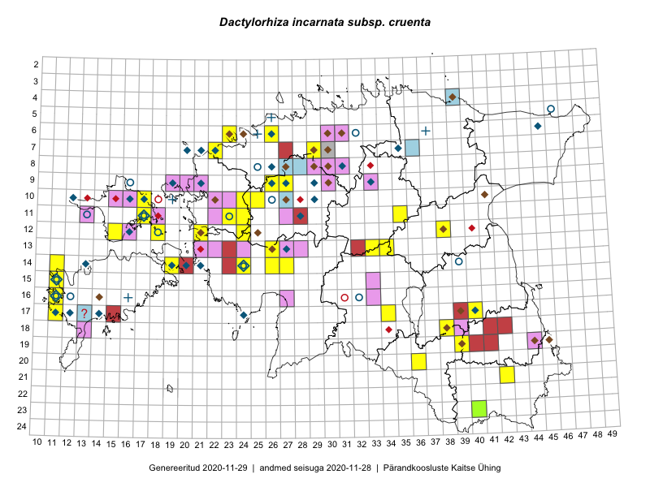

Dactylorhiza incarnata subsp. cruenta — täpiline sõrmkäpp
Orchidaceae :: Dactylorhiza incarnata subsp. cruenta (O.F.Müll.) P.D.Sell (67); Dactylorhiza cruenta (O. F. Muell.) Soó (60); Orchis cruenta O.F. Müll. (10)

Kaart põhineb 305 kirjel:
vaatlusi 117
herbaareksemplare 20
PKÜ kirjeid1 2
ELFi kirjeid2 14
LVA kirjeid3 30
EELISe kirjeid4 122
Taime kaasaegsed ja ajaloolised leiukohad asuvad 120 ruudus.
Tingmärgid ja leidudega ruutude arvud periooditi uues (u) ja 2005 andmestikus (v)
| █ | vahemik | u5 | v6 |
|---|---|---|---|
| █ | 2006–2020 | 89 | – |
| ◆/◇ | 1971–2005 | 59 | 38 |
| ○ | 1921–1970 | 15 | 8 |
| + | kuni 1920 | 5 | 0 |
| × | hävinud | – | 0 |
| ? | kaheldav | – | 1 |
| Ruut | Leidja(d) | Leiuaeg | Kirje |
|---|---|---|---|
| 04-39;04-40 | Jaan Spiegel | 2020-08-17 | ELF: 958 |
| 17-34 | Meeli Mesipuu | 2020-07-26 | punkt: Dactylorhiza incarnata subsp. cruenta (O.F.Müll.) P.D.Sell |
| 07-36 | Jaan Spiegel | 2020-07-15 | ELF: 24895 |
| 19-40 | Avo Veermäe | 2020-07-10 | LVA: -469347400 |
| 12-21 | Kaili Kattai | 2020-07-07 | punkt: Dactylorhiza incarnata subsp. cruenta (O.F.Müll.) P.D.Sell |
| 19-41 | Avo Veermäe | 2020-07-07 | LVA: -780200026 |
| 20-36 | Ulvi Selgis, Enn Selgis, Hans Albert William Portsmuth, Angelika Portsmuth | 2020-07-05 | punkt: Dactylorhiza incarnata subsp. cruenta (O.F.Müll.) P.D.Sell |
| 20-36 | Ulvi Selgis, Angelika Portsmuth, Hans Albert William Portsmuth, Enn Selgis | 2020-07-05 | punkt: Dactylorhiza incarnata subsp. cruenta (O.F.Müll.) P.D.Sell |
| 18-38 | Jekaterina Aida, Kaisa Alla, Reet Ohna, Aiki Tibar, Arto-Randel Servet | 2020-07-05 | punkt: Dactylorhiza incarnata subsp. cruenta (O.F.Müll.) P.D.Sell |
| 19-39 | Ester Valdvee, Aare Laht, Tiiu-Maie Laht | 2020-07-04 | punkt: Dactylorhiza incarnata subsp. cruenta (O.F.Müll.) P.D.Sell |
| 19-39 | Ester Valdvee, Aare Laht, Tiiu-Maie Laht | 2020-07-04 | punkt: Dactylorhiza incarnata subsp. cruenta (O.F.Müll.) P.D.Sell |
| 19-39 | Ester Valdvee, Aare Laht, Tiiu-Maie Laht | 2020-07-04 | punkt: Dactylorhiza incarnata subsp. cruenta (O.F.Müll.) P.D.Sell |
| 19-39 | Ester Valdvee, Aare Laht, Tiiu-Maie Laht | 2020-07-04 | punkt: Dactylorhiza incarnata subsp. cruenta (O.F.Müll.) P.D.Sell |
| 19-39 | Ester Valdvee, Aare Laht, Tiiu-Maie Laht | 2020-07-04 | punkt: Dactylorhiza incarnata subsp. cruenta (O.F.Müll.) P.D.Sell |
| 19-39 | Ester Valdvee, Aare Laht, Tiiu-Maie Laht | 2020-07-04 | punkt: Dactylorhiza incarnata subsp. cruenta (O.F.Müll.) P.D.Sell |
| 18-44 | Aili Jürmann | 2020-06-28 | LVA: 757203900 |
| 10-25 | Thea Kull | 2020-06-19 | punkt: Dactylorhiza incarnata subsp. cruenta (O.F.Müll.) P.D.Sell |
| 11-23 | Thea Kull | 2020-06-18 | punkt: Dactylorhiza incarnata subsp. cruenta (O.F.Müll.) P.D.Sell |
| 12-24 | Thea Kull | 2020-06-17 | punkt: Dactylorhiza incarnata subsp. cruenta (O.F.Müll.) P.D.Sell |
| 12-24 | Thea Kull | 2020-06-17 | punkt: Dactylorhiza incarnata subsp. cruenta (O.F.Müll.) P.D.Sell |
| 11-24 | Thea Kull | 2020-06-17 | punkt: Dactylorhiza incarnata subsp. cruenta (O.F.Müll.) P.D.Sell |
| 14-20 | Ants Animägi | 2020-06-15 | LVA: -1194829800 |
| 13-23 | Ants Animägi | 2020-06-13 | LVA: 2002636330 |
| 14-23 | Ants Animägi | 2020-06-09 | LVA: -987736046 |
| 13-26 | Ants Animägi | 2020-06-03 | LVA: 1099836292 |
| 17-40 | Avo Veermäe | 2019-08-03 | LVA: -1492429542 |
| 19-41 | Avo Veermäe | 2019-08-01 | LVA: 411111516 |
| 17-40 | Meeli Mesipuu | 2019-07-19 | punkt: Dactylorhiza incarnata subsp. cruenta (O.F.Müll.) P.D.Sell |
| 18-42 | Avo Veermäe | 2019-07-16 | LVA: -1271875916 |
| 17-39 | Avo Veermäe | 2019-07-14 | LVA: 578773214 |
| 19-41 | Avo Veermäe | 2019-07-11 | LVA: -475722208 |
| 10-22 | Riine Latserus, Marilin Mõtlep, Tõnu Ploompuu, Ulvi Selgis | 2019-07-10 | EELIS: -282932414 |
| 10-22 | Riine Latserus, Marilin Mõtlep, Tõnu Ploompuu, Ulvi Selgis | 2019-07-09 | EELIS: 672030766 |
| 10-22 | Marilin Mõtlep, Tõnu Ploompuu, Ulvi Selgis | 2019-07-08 | EELIS: 1054994878 |
| 17-40 | Meeli Mesipuu | 2019-06-19 | punkt: Dactylorhiza incarnata subsp. cruenta (O.F.Müll.) P.D.Sell |
| 17-15 | Ants Animägi | 2019-06-11 | LVA: 1831028290 |
| 06-23 | Ott Luuk, Meeli Mesipuu | 2018-07-06 | punkt: Dactylorhiza incarnata subsp. cruenta (O.F.Müll.) P.D.Sell |
| 06-23 | Ott Luuk, Meeli Mesipuu | 2018-07-06 | punkt: Dactylorhiza incarnata subsp. cruenta (O.F.Müll.) P.D.Sell |
| 16-11 | Mari Reitalu, Indrek Tammekänd | 2018-07-06 | punkt: Dactylorhiza incarnata subsp. cruenta (O.F.Müll.) P.D.Sell |
| 06-23 | Ott Luuk, Meeli Mesipuu, Jaak-Albert Metsoja, Mari Metsoja, Peedu Saar | 2018-07-04–2018-07-06 | ruut/ala: Dactylorhiza incarnata subsp. cruenta (O.F.Müll.) P.D.Sell |
| 09-27 | Marit Kivisild, Jüri Kõiv, Aat Sarv | 2018-06-12 | LVA: -734249088 |
| 13-32 | Kristo Keevend, Triinu Keevend | 2018-06-03 | LVA: 392369314 |
| 14-11 | Toomas Kukk, Ilmar Uibopuu, Mari Reitalu | 2018-05-28 | punkt: Dactylorhiza incarnata subsp. cruenta (O.F.Müll.) P.D.Sell |
| 11-28 | Ants Animägi | 2017-07-21 | LVA: -750229114 |
| 12-38 | Ulvi Selgis, Enn Selgis | 2017-07-09 | punkt: Dactylorhiza incarnata subsp. cruenta (O.F.Müll.) P.D.Sell |
| 12-38 | Enn Selgis | 2017-07-09 | LVA: 625174746 |
| 07-27 | Ants Animägi | 2017-07-07 | LVA: 833438702 |
| 11-35 | Sirje Azarov | 2017-07-06 | punkt: Dactylorhiza incarnata subsp. cruenta (O.F.Müll.) P.D.Sell |
| 07-22 | Meeli Mesipuu | 2017-07-04 | punkt: Dactylorhiza incarnata subsp. cruenta (O.F.Müll.) P.D.Sell |
| 11-13 | Rita Miller | 2017-06-29 | EELIS: 258556032 |
| 18-41 | Avo Veermäe | 2017-06-29 | LVA: 1804711650 |
| 17-40 | Ulvi Selgis, Enn Selgis | 2017-06-22 | punkt: Dactylorhiza incarnata subsp. cruenta (O.F.Müll.) P.D.Sell |
| 17-40 | Enn Selgis | 2017-06-22 | LVA: -36749918 |
| 13-32 | Kristo Keevend, Triinu Keevend | 2017-06-18 | LVA: -1583891288 |
| 12-18 | Toomas Kukk, Peeter Pärn | 2017-06-15 | punkt: Dactylorhiza incarnata subsp. cruenta (O.F.Müll.) P.D.Sell |
| 12-18 | Peedu Saar, Ilmar Uibopuu | 2017-06-15 | punkt: Dactylorhiza incarnata subsp. cruenta (O.F.Müll.) P.D.Sell |
| 12-18 | Peedu Saar, Ilmar Uibopuu | 2017-06-15 | ruut/ala: Dactylorhiza incarnata subsp. cruenta (O.F.Müll.) P.D.Sell |
| 10-46 | Meeli Mesipuu, Karin Kikas | 2016-08-31 | ruut/ala: Dactylorhiza incarnata subsp. cruenta (O.F.Müll.) P.D.Sell |
| 13-34 | Timo Luhamäe, Meeli Mesipuu | 2016-07-22 | punkt: Dactylorhiza incarnata subsp. cruenta (O.F.Müll.) P.D.Sell |
| 13-34 | Meeli Mesipuu, Timo Luhamäe | 2016-07-22 | ruut/ala: Dactylorhiza incarnata subsp. cruenta (O.F.Müll.) P.D.Sell |
| 13-33 | Ott Luuk, Indrek Tammekänd | 2016-07-21 | punkt: Dactylorhiza incarnata subsp. cruenta (O.F.Müll.) P.D.Sell |
| 06-26 | Ulvi Selgis | 2016-07-16 | punkt: Dactylorhiza incarnata subsp. cruenta (O.F.Müll.) P.D.Sell |
| 06-26 | Ulvi Selgis | 2016-07-16 | LVA: 489487868 |
| 16-33 | Toomas Hirse | 2016-07-14 | EELIS: -1908796304 |
| 15-33 | Toomas Hirse | 2016-07-14 | EELIS: -1907939642 |
| 09-27 | Liina Oja, Rein Kalamees | 2016-07-06 | punkt: Dactylorhiza incarnata subsp. cruenta (O.F.Müll.) P.D.Sell |
| 12-24 | Sirje Azarov, Meeli Mesipuu | 2016-07-05 | ruut/ala: Dactylorhiza incarnata subsp. cruenta (O.F.Müll.) P.D.Sell |
| 12-24 | Meeli Mesipuu, Sirje Azarov | 2016-07-05 | punkt: Dactylorhiza cruenta (O. F. Muell.) Soó |
| 12-24 | Meeli Mesipuu, Sirje Azarov | 2016-07-05 | punkt: Dactylorhiza cruenta (O. F. Muell.) Soó |
| 14-11 | Ants Animägi | 2016-06-25 | LVA: 302891994 |
| 17-11 | Mari Reitalu, Triin Reitalu | 2016-06-24 | punkt: Dactylorhiza incarnata subsp. cruenta (O.F.Müll.) P.D.Sell |
| 21-42 | Sander Laherand, Ott Luuk | 2016-06-16 | ruut/ala: Dactylorhiza incarnata subsp. cruenta (O.F.Müll.) P.D.Sell |
| 21-42 | Ott Luuk, Sander Laherand | 2016-06-16 | punkt: Dactylorhiza incarnata subsp. cruenta (O.F.Müll.) P.D.Sell |
| 23-40 | Ott Luuk, Sander Laherand, Susanna Vain | 2016-06-14 | punkt: Dactylorhiza incarnata subsp. cruenta (O.F.Müll.) P.D.Sell |
| 23-40 | Ott Luuk, Sander Laherand, Susanna Vain | 2016-06-14 | punkt: Dactylorhiza incarnata subsp. cruenta (O.F.Müll.) P.D.Sell |
| 23-40 | Ott Luuk | 2016-06-14 | TAA0138900: Dactylorhiza incarnata subsp. cruenta (O.F.Müll.) P.D.Sell |
| 19-39 | Tarmo Niitla, Peedu Saar | 2016-06-13 | punkt: Dactylorhiza cruenta (O. F. Muell.) Soó |
| 19-39 | Peedu Saar, Tarmo Niitla | 2016-06-13 | ruut/ala: Dactylorhiza incarnata subsp. cruenta (O.F.Müll.) P.D.Sell |
| 11-17 | Ants Animägi | 2016-06-13 | LVA: -1477893506 |
| 10-23 | Toomas Hirse | 2016-06-10 | EELIS: -1962826022 |
| 10-23 | Toomas Hirse | 2016-06-10 | EELIS: -1961988230 |
| 06-30;07-30 | Toomas Hirse | 2016-06-08 | EELIS: -1988987872 |
| 06-30;07-30 | Toomas Hirse | 2016-06-08 | EELIS: 1662699606 |
| 13-32 | Kristo Keevend, Triinu Keevend | 2016-06-04 | LVA: -93873478 |
| 14-19 | Meeli Mesipuu | 2015-07-11 | ruut/ala: Dactylorhiza incarnata subsp. cruenta (O.F.Müll.) P.D.Sell |
| 14-19 | Meeli Mesipuu | 2015-07-11 | punkt: Dactylorhiza incarnata subsp. cruenta (O.F.Müll.) P.D.Sell |
| 13-22 | Ilona Lepik | 2015-07-02 | EELIS: -43591580 |
| 11-27 | Toomas Hirse | 2015-06-30 | EELIS: 1862681950 |
| 13-26 | Ott Luuk | 2015-06-28 | punkt: Dactylorhiza incarnata subsp. cruenta (O.F.Müll.) P.D.Sell |
| 12-15 | Eeva-Maria Jeletsky, Tarmo Niitla | 2015-06-26 | punkt: Dactylorhiza cruenta (O. F. Muell.) Soó |
| 12-15 | Eeva-Maria Jeletsky, Tarmo Niitla | 2015-06-26 | ruut/ala: Dactylorhiza incarnata subsp. cruenta (O.F.Müll.) P.D.Sell |
| 06-26 | Ivar Leidus | 2015-06-21 | LVA: 885559976 |
| 06-26 | Ivar Leidus | 2015-06-17 | LVA: 310569136 |
| 07-30 | Arne Kivistik | 2015-06-14 | LVA: 1149591646 |
| 14-27 | Tiit Hallikma, Indrek Tammekänd, Toomas Kukk | 2015-06-08 | punkt: Dactylorhiza incarnata subsp. cruenta (O.F.Müll.) P.D.Sell |
| 14-27 | Tiit Hallikma, Indrek Tammekänd, Toomas Kukk | 2015-06-08 | punkt: Dactylorhiza incarnata subsp. cruenta (O.F.Müll.) P.D.Sell |
| 14-26 | Tiit Hallikma, Indrek Tammekänd, Toomas Kukk | 2015-06-08 | punkt: Dactylorhiza incarnata subsp. cruenta (O.F.Müll.) P.D.Sell |
| 06-23 | Jaak-Albert Metsoja, Mari Metsoja, Ott Luuk | 2015-06-05 | ruut/ala: Dactylorhiza incarnata subsp. cruenta (O.F.Müll.) P.D.Sell |
| 06-23 | Jaak-Albert Metsoja, Mari Metsoja, Ott Luuk | 2015-06-05 | punkt: Dactylorhiza incarnata subsp. cruenta (O.F.Müll.) P.D.Sell |
| 06-23 | Jaak-Albert Metsoja, Mari Metsoja, Ott Luuk | 2015-06-05 | punkt: Dactylorhiza incarnata subsp. cruenta (O.F.Müll.) P.D.Sell |
| 06-23 | Mari Metsoja, Jaak-Albert Metsoja, Ott Luuk | 2015-06-04 | ruut/ala: Dactylorhiza incarnata subsp. cruenta (O.F.Müll.) P.D.Sell |
| 06-23 | Jaak-Albert Metsoja, Mari Metsoja, Ott Luuk | 2015-06-04 | punkt: Dactylorhiza incarnata subsp. cruenta (O.F.Müll.) P.D.Sell |
| 14-24 | Indrek Tammekänd | 2015-06-04 | punkt: Dactylorhiza incarnata subsp. cruenta (O.F.Müll.) P.D.Sell |
| 17-40 | Karin Kaljund, Marilin Mõtlep | 2014-08-22 | punkt: Dactylorhiza cruenta (O. F. Muell.) Soó |
| 11-17 | Rita Miller, Anni Miller, Liisu Miller, Sander Miller | 2014-07-12 | punkt: Dactylorhiza cruenta (O. F. Muell.) Soó |
| 11-18 | Rita Miller | 2014-07-08 | EELIS: 114094066 |
| 14-11 | Jüri Kõiv | 2014-06-27 | LVA: 1403854800 |
| 10-17 | Rita Miller | 2014-06-16 | punkt: Dactylorhiza cruenta (O. F. Muell.) Soó |
| 09-26 | Peedu Saar, Kersti Püssa, Rein Kalamees, Toomas Kukk | 2014-06-11 | ruut/ala: Dactylorhiza incarnata subsp. cruenta (O.F.Müll.) P.D.Sell |
| 11-18 | Rita Miller | 2014-06-09 | EELIS: 751497202 |
| 06-31 | Uve Ramst | 2013-08-06 | EELIS: 580290072 |
| 17-40 | Kaire Lanno, Karin Kaljund | 2013-08-05 | punkt: Dactylorhiza cruenta (O. F. Muell.) Soó |
| 17-40 | Kaire Lanno, Karin Kaljund | 2013-08-05 | punkt: Dactylorhiza cruenta (O. F. Muell.) Soó |
| 17-40 | Kaire Lanno, Karin Kaljund | 2013-08-05 | punkt: Dactylorhiza cruenta (O. F. Muell.) Soó |
| 10-15 | Rita Miller | 2013-07-02 | EELIS: 1265174642 |
| 10-15 | Rita Miller | 2013-07-02 | EELIS: 1692141682 |
| 06-23 | Meeli Mesipuu | 2013-06-19 | punkt: Dactylorhiza incarnata subsp. cruenta (O.F.Müll.) P.D.Sell |
| 07-29 | Maret Gerz, Ott Luuk, Peedu Saar | 2013-06-18 | punkt: Dactylorhiza cruenta (O. F. Muell.) Soó |
| 15-11 | Mari Reitalu | 2012-07-26 | punkt: Dactylorhiza cruenta (O. F. Muell.) Soó |
| 15-11 | Mari Reitalu | 2012-07-26 | ruut/ala: Dactylorhiza incarnata subsp. cruenta (O.F.Müll.) P.D.Sell |
| 14-11 | Mari Reitalu | 2012-07-26 | ELF: 23190 |
| 10-23 | Tõnu Ploompuu | 2012-07-08 | EELIS: 1518412181 |
| 11-13 | Rita Miller | 2012-06-15 | EELIS: -660915051 |
| 11-24 | Ott Luuk, Triin Tanilas, Geron Perens | 2012-06-14 | punkt: Dactylorhiza cruenta (O. F. Muell.) Soó |
| 10-24 | Ott Luuk, Geron Perens | 2012-06-12 | punkt: Dactylorhiza cruenta (O. F. Muell.) Soó |
| 10-24 | Ott Luuk, Geron Perens | 2012-06-12 | punkt: Dactylorhiza cruenta (O. F. Muell.) Soó |
| 10-24 | Ott Luuk, Geron Perens | 2012-06-12 | punkt: Dactylorhiza cruenta (O. F. Muell.) Soó |
| 08-27;08-28;09-27;09-28 | Aat Sarv | 2010-08-15 | ELF: 17964 |
| 16-27 | Marika Kose | 2010-08-10 | EELIS: -1147131436 |
| 16-27 | Marika Kose | 2010-08-10 | EELIS: -848865630 |
| 11-22 | Tõnu Ploompuu | 2010-07-30 | EELIS: 828357781 |
| 10-27 | Aat Sarv | 2010-07-27 | ELF: 17924 |
| 12-16 | Rita Miller | 2010-06-21 | EELIS: 14342099 |
| 09-27 | Aat Sarv | 2010-06-21 | ELF: 17912 |
| 17-13 | Oliver Parrest | 2010-06-18 | ELF: 16713 |
| 18-13 | Oliver Parrest | 2010-06-17 | EELIS: 1295060247 |
| 09-19 | Meeli Mesipuu, Virve Sõber | 2010-06-16 | EELIS: -1753435515 |
| 09-19 | Meeli Mesipuu, Virve Sõber | 2010-06-16 | EELIS: -682635515 |
| 09-19 | Meeli Mesipuu, Virve Sõber | 2010-06-16 | EELIS: 853435515 |
| 09-19 | Meeli Mesipuu, Virve Sõber | 2010-06-16 | EELIS: 1860735515 |
| 10-16 | Rita Miller | 2010-06-15 | EELIS: 756955347 |
| 12-21;13-21 | Eve Mägi | 2010-06-09 | EELIS: -922039742 |
| 13-21 | Eve Mägi | 2010-06-09 | EELIS: -820192869 |
| 13-21 | Eve Mägi | 2010-06-09 | EELIS: -667677372 |
| 06-26 | Liina Remm, Aleksander Tukk | 2010-06-08 | ELF: 10499 |
| 06-26 | Liina Remm, Aleksander Tukk | 2010-06-08 | ELF: 10500 |
| 11-18 | Rita Miller, Varje Vendla | 2009-08-05 | EELIS: -672249828 |
| 07-30 | Arne Kivistik | 2009-06-30 | LVA: 429250368 |
| 08-28 | Aat Sarv | 2009-06-20 | ELF: 13046 |
| 09-33 | Ester Valdvee | 2008-07-21 | EELIS: -1956295930 |
| 09-33 | Ester Valdvee | 2008-07-21 | EELIS: -1514826737 |
| 09-33 | Ester Valdvee | 2008-07-21 | EELIS: 1018200228 |
| 06-31 | Loore Ehrlich, Uve Ramst | 2008-07-09 | EELIS: -1344338584 |
| 09-33 | Ester Valdvee | 2008-06-13 | EELIS: 1509238298 |
| 09-21 | Mare Leis | 2008-06-07 | EELIS: -26608505 |
| 09-20 | Silja Kana, Maarja Kukk | 2008-06-05 | EELIS: -801509612 |
| 09-20 | Silja Kana, Maarja Kukk | 2008-06-05 | EELIS: 1167140622 |
| 09-20 | Silja Kana, Maarja Kukk | 2008-06-05 | EELIS: 1198772976 |
| 09-20 | Mare Leis | 2008-06-05 | EELIS: -1883238806 |
| 09-20 | Mare Leis | 2008-06-05 | EELIS: 676127157 |
| 09-20 | Mare Leis | 2008-06-05 | EELIS: 695388742 |
| 09-20 | Mare Leis | 2008-06-05 | EELIS: 1582241923 |
| 09-20 | Mare Leis | 2008-06-05 | EELIS: 1670057219 |
| 19-44 | Ülle Kukk | 2007-06-20 | EELIS: 1422544226 |
| 09-33 | Ester Valdvee | 2007-06-12 | EELIS: -1297913737 |
| 18-39 | Kalle Remm | 2006-07-11 | EELIS: -1897912184 |
| 18-39 | Kalle Remm | 2006-07-11 | EELIS: 1443040771 |
| 19-39 | Kalle Remm | 2005-08-16 | EELIS: -856582011 |
| 19-39 | Kalle Remm | 2005-08-16 | EELIS: 389168191 |
| 19-39 | Kalle Remm | 2005-08-16 | EELIS: 1253388564 |
| 19-39 | Kalle Remm | 2005-08-12 | EELIS: -2079292703 |
| 19-39 | Kalle Remm | 2005-08-12 | EELIS: 532490126 |
| 19-39 | Kalle Remm | 2005-08-12 | EELIS: 644102752 |
| 19-39 | Kalle Remm | 2005-08-12 | EELIS: 1218881083 |
| 19-39 | Kalle Remm | 2005-08-12 | EELIS: 1572818274 |
| 19-39 | Kalle Remm | 2005-08-11 | EELIS: 592021495 |
| 15-11 | Anneli Palo | 2005-06-23 | EELIS: 1170182046 |
| 10-22 | Tõnu Ploompuu | 2005-06-18 | EELIS: -2144973075 |
| 10-22 | Tõnu Ploompuu | 2005-06-18 | EELIS: 88039209 |
| 10-22 | Tõnu Ploompuu | 2005-06-18 | EELIS: 1626071930 |
| 09-33 | Ester Valdvee | 2005 | ruut/ala: Dactylorhiza incarnata subsp. cruenta (O.F.Müll.) P.D.Sell |
| 18-38 | Ene Hurt | 2004-07-15 | EELIS: 2011699003 |
| 06-24 | Laimdota Truus | 2004-06-13 | EELIS: -647312128 |
| 06-23 | Laimdota Truus | 2004-06-13 | EELIS: 845324118 |
| 06-23 | Laimdota Truus | 2004-06-13 | EELIS: 2115325455 |
| 06-31 | Loore Ehrlich | 2003-07-14 | EELIS: 1689524224 |
| 16-14 | Meeli Mesipuu, Kadri Tali | 2003-07-04 | PKÜ: 11380 |
| 14-13 | Mari Reitalu | 2003 | ruut/ala: Dactylorhiza cruenta (O. F. Muell.) Soó |
| 17-12 | Mari Reitalu | 2003 | ruut/ala: Dactylorhiza cruenta (O. F. Muell.) Soó |
| 17-24 | Heikki Luhamaa | 2003 | ruut/ala: Dactylorhiza incarnata subsp. cruenta (O.F.Müll.) P.D.Sell |
| 12-21 | Marje Loide | 2002-07-11 | EELIS: 792551172 |
| 15-11 | Mare Liik | 2002-06-22 | EELIS: 1512481748 |
| 11-17 | Taavi Tuulik | 2002-06-07 | EELIS: 718159654 |
| 11-17 | Taavi Tuulik | 2002-06-07 | EELIS: 2082050125 |
| 14-21 | Toomas Kukk | 2001-01-29 | PKÜ: 3517 |
| 09-26 | Tõnu Ploompuu | 2001–2005 | punkt: Dactylorhiza cruenta (O. F. Muell.) Soó |
| 19-44 | Ülle Kukk | 2000-06-27 | EELIS: 696815129 |
| 09-33 | Tõnu Ploompuu | 2000 | ruut/ala: Dactylorhiza cruenta (O. F. Muell.) Soó |
| 10-27 | Ruth Aguraiuja, Mare Liik | 1999-09-30 | EELIS: 1165310308 |
| 12-25 | Uudo Timm | 1999-06-21 | EELIS: 1084388206 |
| 14-20 | Toomas Kukk | 1999-06-14–1999-06-17 | ruut/ala: Dactylorhiza cruenta (O. F. Muell.) Soó |
| 17-40 | Vilma Kuusk, Tiiu Kull | 1998-06-09 | ruut/ala: Dactylorhiza cruenta (O. F. Muell.) Soó |
| 04-39;04-40 | Tõnu Ploompuu | 1997-08-25 | ELF: 958 |
| 13-26 | Toomas Kukk, Toomas Trapido | 1995-08-27 | ELF: 6452 |
| 06-30;07-30 | Arne Kivistik | 1995-06-26 | EELIS: 1528042493 |
| 07-35 | Ülle Kukk | 1994-08 | ELF: 2755 |
| 09-21 | Anneli Palo | 1994-06-08–1994-08-16 | ELF: 1455 |
| 09-19 | Toomas Kukk, Elle Roosaluste | 1993-07-09–1996-07-13 | ruut/ala: Dactylorhiza incarnata subsp. cruenta (O.F.Müll.) P.D.Sell |
| 07-20 | Toomas Kukk | 1993 | ruut/ala: Dactylorhiza incarnata subsp. cruenta (O.F.Müll.) P.D.Sell |
| 09-27 | Olev Abner | 1992 | ruut/ala: Orchis cruenta O.F. Müll. |
| 09-29 | Olev Abner | 1992 | ruut/ala: Orchis cruenta O.F. Müll. |
| 10-29 | Olev Abner | 1992 | ruut/ala: Dactylorhiza cruenta (O. F. Muell.) Soó |
| 14-24 | Ülle Kukk | 1991-06-20 | EELIS: 1729907175 |
| 14-19 | Mari Reitalu | 1991–1999 | ruut/ala: Dactylorhiza cruenta (O. F. Muell.) Soó |
| 07-35 | Olev Abner | 1990-09 | ruut/ala: Dactylorhiza cruenta (O. F. Muell.) Soó |
| 07-29 | Arne Kivistik | 1989-06-26 | EELIS: -1999913382 |
| 19-45 | Ülle Kukk | 1989-06-12 | EELIS: -578399677 |
| 10-41 | Ülle Kukk | 1989-06-06 | EELIS: 403691083 |
| 08-29 | Arne Kivistik | 1987-07-05 | EELIS: -66628993 |
| 07-29 | Arne Kivistik | 1987-06-29 | EELIS: 137848115 |
| 08-27 | Ülle Kukk | 1987-06-08 | EELIS: 1785752728 |
| 14-20 | Mari Reitalu | 1987–1997 | ruut/ala: Dactylorhiza cruenta (O. F. Muell.) Soó |
| 07-29 | Arne Kivistik | 1986-07-07 | EELIS: -1322226023 |
| 08-29 | Arne Kivistik | 1986-06-30 | EELIS: -484246873 |
| 07-29 | Arne Kivistik | 1986-06-27 | EELIS: -1959445825 |
| 07-29 | Arne Kivistik | 1986-06-26 | EELIS: 167390018 |
| 07-30 | Arne Kivistik | 1986-06-24 | EELIS: 1115843957 |
| 09-26 | Nele Ingerpuu, Tiiu Kull | 1986-06-22 | ruut/ala: Dactylorhiza cruenta (O. F. Muell.) Soó |
| 07-29 | Arne Kivistik | 1985-07-17 | EELIS: 1767149466 |
| 13-27 | M. Abakumova, V. Kuusk, L. Viljasoo, H. Krall | 1985-07-03 | ruut/ala: Dactylorhiza cruenta (O. F. Muell.) Soó |
| 11-28 | H. Krall, Illi Tarmu, V. Kuusk, L. Viljasoo, M. Abakumova | 1985-07-01 | ruut/ala: Dactylorhiza cruenta (O. F. Muell.) Soó |
| 06-26 | H. Aasamaa | 1985 | ruut/ala: Dactylorhiza cruenta (O. F. Muell.) Soó |
| 10-17 | Taavi Tuulik | 1984–1986 | ruut/ala: Dactylorhiza cruenta (O. F. Muell.) Soó |
| 09-21 | botaaniline ekspeditsioon ZBI | 1981-07-02 | ruut/ala: Dactylorhiza cruenta (O. F. Muell.) Soó |
| 07-22 | H. Krall | 1981-06-30 | TAA0059916: Dactylorhiza cruenta (O. F. Muell.) Soó |
| 07-21 | botaaniline ekspeditsioon ZBI | 1981-06-30 | ruut/ala: Dactylorhiza cruenta (O. F. Muell.) Soó |
| 07-22 | botaaniline ekspeditsioon ZBI | 1981-06-29–1981-06-30 | ruut/ala: Dactylorhiza cruenta (O. F. Muell.) Soó |
| 06-45 | Maret Kask, Linda Viljasoo, Heljo Krall, Vilma Kuusk, Malle Leht, Liivia Laasimer, Maria Abakumova | 1980-09-11–1982-07-22 | ruut/ala: Dactylorhiza cruenta (O. F. Muell.) Soó |
| 16-11 | Maret Kask, Linda Viljasoo | 1980-08 | ruut/ala: Dactylorhiza cruenta (O. F. Muell.) Soó |
| 14-21 | V. Kuusk | 1980-06 | ruut/ala: Dactylorhiza cruenta (O. F. Muell.) Soó |
| 12-16 | Taavi Tuulik | 1980–2000 | ruut/ala: Dactylorhiza cruenta (O. F. Muell.) Soó |
| 10-16 | Taavi Tuulik | 1980–2000 | ruut/ala: Dactylorhiza cruenta (O. F. Muell.) Soó |
| 10-12 | Taavi Tuulik | 1980–2000 | ruut/ala: Dactylorhiza cruenta (O. F. Muell.) Soó |
| 08-26 | M. Kask, L. Laasimer, L. Viljasoo | 1979-07-04 | ruut/ala: Dactylorhiza cruenta (O. F. Muell.) Soó |
| 08-31 | Vilma Kuusk | 1976-07-06 | TAA0059920: Dactylorhiza cruenta (O. F. Muell.) Soó |
| 17-14 | Vilma Kuusk, G. Muuga | 1974-06-18 | TAA0059917: Dactylorhiza cruenta (O. F. Muell.) Soó |
| 17-11 | M. Kask, L. Viljasoo, V. Kuusk | 1973-06 | ruut/ala: Dactylorhiza cruenta (O. F. Muell.) Soó |
| 08-25 | H. Krall | 1968-06-17–1971-07-07 | ruut/ala: Dactylorhiza cruenta (O. F. Muell.) Soó |
| 14-39 | Vilma Kuusk | 1967-06-22 | TAA0059919: Dactylorhiza cruenta (O. F. Muell.) Soó |
| 16-32 | Agnes Ojaveer | 1965-06-18 | TAA0059915: Dactylorhiza cruenta (O. F. Muell.) Soó |
| 15-11 | H. Rebassoo, K. Pork, M. Reitalu | 1960–1972 | ruut/ala: Dactylorhiza cruenta (O. F. Muell.) Soó |
| 06-32 | Linda Viljasoo, A. Saare | 1958-07-03 | TAA0059918: Dactylorhiza cruenta (O. F. Muell.) Soó |
| 09-16 | Haide-Ene Rebassoo | 1957–1984 | ruut/ala: Dactylorhiza cruenta (O. F. Muell.) Soó |
| 11-13 | Haide-Ene Rebassoo | 1957–1984 | ruut/ala: Dactylorhiza cruenta (O. F. Muell.) Soó |
| 11-17 | Haide-Ene Rebassoo | 1957–1984 | ruut/ala: Dactylorhiza cruenta (O. F. Muell.) Soó |
| 12-18 | Haide-Ene Rebassoo | 1957–1984 | ruut/ala: Dactylorhiza cruenta (O. F. Muell.) Soó |
| 12-18 | H. Rebassoo | 1957–1972 | ruut/ala: Dactylorhiza cruenta (O. F. Muell.) Soó |
| 16-11 | B. Saarsoo | 1936-06–1937-08 | ruut/ala: Dactylorhiza cruenta (O. F. Muell.) Soó |
| 16-12 | B. Saarsoo | 1936-06–1936-09 | ruut/ala: Dactylorhiza cruenta (O. F. Muell.) Soó |
| 10-26 | Gustav Vilbaste | 1933-06-26 | TAA0059922: Dactylorhiza cruenta (O. F. Muell.) Soó |
| 11-23 | Erik Sits | 1931-06-20 | TAM0051389: Dactylorhiza cruenta (O. F. Muell.) Soó |
| 05-46 | Gustav Vilbaste | 1929-07-09 | TAA0059921: Dactylorhiza cruenta (O. F. Muell.) Soó |
| 14-24 | Theodor Lippmaa | 1928–1932 | ruut/ala: Dactylorhiza incarnata subsp. cruenta (O.F.Müll.) P.D.Sell |
| 10-19 | R. Lehbert | 1912-06-29 | TAM0067602: Orchis cruenta O.F. Müll. |
| 10-19 | R. Lehbert | 1912-06-29 | TAM0067604: Orchis cruenta O.F. Müll. |
| 06-37 | R. Lehbert | 1903-06-05 | TAM0067516: Orchis cruenta O.F. Müll. |
| 05-26 | R. Lehbert | 1901-07-10 | TAM0067384: Orchis cruenta O.F. Müll. |
| 06-25 | E. Niclasen | 1901-06-15 | TU251773: Dactylorhiza incarnata subsp. cruenta (O.F.Müll.) P.D.Sell |
| 06-25 | E. Niclasen | 1900-06-15–1900-06-23 | TAM0078200: Orchis cruenta O.F. Müll. |
| 06-25 | E. Niclasen | 1900-06-15–1900-06-23 | TAM0078864: Orchis cruenta O.F. Müll. |
| 06-25 | E. Niclasen | 1900-06-15–1900-06-23 | TAM0078865: Orchis cruenta O.F. Müll. |
| 16-16 | R. Lehbert | 1900-06-13 | TAM0067510: Orchis cruenta O.F. Müll. |
| 06-25 | E. Niclasen | 1900-06 | TU251774: Dactylorhiza incarnata subsp. cruenta (O.F.Müll.) P.D.Sell |
| 10-22 | Tõnu Ploompuu | EELIS: -1604276569 | |
| 10-22 | Tõnu Ploompuu | EELIS: -1264009892 | |
| 17-39 | Toomas Hirse, Ene Hurt, Ülle Kukk | EELIS: -68601780 | |
| 12-38 | Toomas Hirse, Ene Hurt, Ülle Kukk | EELIS: -491279239 | |
| 13-27;13-28 | Kadri Hänni, Indrek Tammekänd, Jaak Tammekänd | EELIS: -589158978 | |
| 13-24 | Elle Roosaluste | EELIS: -1625832345 | |
| 13-24 | Elle Roosaluste | EELIS: -1302653480 | |
| 13-24 | Elle Roosaluste | EELIS: -1279485790 | |
| 13-24 | Elle Roosaluste | EELIS: -800833902 | |
| 13-24 | Elle Roosaluste | EELIS: 69317398 | |
| 13-24 | Elle Roosaluste | EELIS: 1581519581 | |
| 07-29 | Arne Kivistik | EELIS: -1756157910 | |
| 08-29 | Arne Kivistik | EELIS: -870452724 | |
| 07-29 | Arne Kivistik | EELIS: -1994242962 | |
| 07-29 | Arne Kivistik | EELIS: -1651149886 | |
| 07-29 | Arne Kivistik | EELIS: 1942634499 | |
| 07-30 | Arne Kivistik | EELIS: -1650260194 | |
| 07-29 | Arne Kivistik | EELIS: -518357213 | |
| 07-29 | Arne Kivistik | EELIS: 1397051928 | |
| 07-29 | Arne Kivistik | EELIS: 1946540179 | |
| 08-30;09-30 | Arne Kivistik | EELIS: -964156839 | |
| 06-30;07-30 | Arne Kivistik | EELIS: 1052837338 | |
| 07-29 | Arne Kivistik | EELIS: 1778457224 | |
| 07-29 | Arne Kivistik | EELIS: -202334481 | |
| 08-29 | Arne Kivistik | EELIS: 308345005 | |
| 08-31 | Arne Kivistik | EELIS: -422653668 | |
| 08-29 | Arne Kivistik | EELIS: -2074952546 | |
| 06-30;07-30 | Arne Kivistik | EELIS: -705137331 | |
| 08-30;09-30 | Arne Kivistik | EELIS: 190656834 | |
| 08-29 | Arne Kivistik | EELIS: 946152716 | |
| 08-29 | Anneli Palo | EELIS: 1822270711 | |
| 09-19 | EELIS: -462766337 |
Pärandkoosluste Kaitse Ühingu (PKÜ) andmebaas sisaldab inventeeritud koosluste kirjeldusi ja liigiloendeid. Kõige enam on andmeid niidutaimede kohta.↩︎
Eestimaa Looduse Fondi (ELF) andmebaas sisaldab inventeeritud koosluste kirjeldusi ja liigiloendeid. Eriti rohkesti on andmeid märgalade kohta.↩︎
Loodusvaatluste andmebaas. https://lva.eelis.ee, väljavõte seisuga 19.10.2020↩︎
EELIS (Eesti Looduse Infosüsteem - Keskkonnaregister): Keskkonnaagentuur; andmed seisuga 27.10.2020. Väljavõttest on tuletatud ruudu täpsusega kirjed seal, kus antud ruut/periood ei ole juba asustatud muude allikate järgi↩︎
Ruutude arv uue atlase andmekogu järgi. Muuhulgas arvestab vanemat herbaariumi, 2005. aasta atlase välitöölehtedelt uuesti digitaliseeritud andmeid jne. Uue atlase andmekogust pärinevad andmed on kaardile kantud siniste sümbolitega.↩︎
Ruutude arv 2005. aasta atlase (Kukk, T., Kull, T., Eesti taimede levikuatlas. Eesti Maaülikool, Põllumajandus- ja Keskkonnainstituut, Tartu, 2005) järgi. Andmeallikana on kasutatud levik.exe programmi, kus igas ruudus on registreeritud vaid uusim leid. Seetõttu on vanemate perioodide kohta andmed puudulikud. Kasutatud levik.exe andmestikus leidub mõningaid kõrvalekaldeid atlase trükis ilmunud versioonist, sagedamini tarnade ja käpaliste seas. Lisaks leidub selles andmestikus valik liike (peamiselt väheste leidudega tulnuktaimed), mille kaarte trükis ei avaldatud. Vana atlase andmed ruutudest, milles ei ole uue atlase andmekogus leide enne 2006. aastat, on kaardil esitatud punaste sümbolitega. Vana atlase andmetel hävinud ja kaheldavaid leiukohti pole hilisemate (taas)leidude põhjal korrigeeritud.↩︎